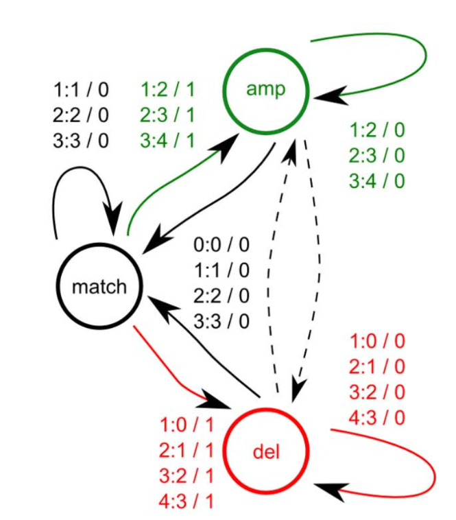

DATA473
Algorithms in Data Science
Alex Gavryushkin
2023 Semester 2
Table of contents
Literature, resources
- YouTube
- These slides
- Complementary (rapidly evolving) lecture notes
- Tim Roughgarden: Algorithms Illuminated
- Papers including these that we will read:
Biological Data Science Lab @UCNZ

GitHub: @bioDS
Twitter: @bioDS_lab
Part 0: Introduction

ML = Machine Learning
CoSt = Computational Statistics
AS = Applied Statistics

Garey and Johnson. Computers and Intractability. 1979
Why biological data science?
Because the skills are highly transferable:
- Scale
- Heterogeneity
- Visualisation and communication
- High-performance computing
Why is it suddenly a thing?

Lecture 1: Background
Finite state automata


DFA = NFA
Pumping Lemma
- A finite set $Q$ of states
- A finite set $\Sigma$ called the input alphabet (lower case letters)
- A finite set $\color{blue}{\Gamma}$ called the stack alphabet (upper case letters)
- A relation $\delta \subseteq Q \times \Sigma \cup \{\lambda\} \times \color{blue}{\Gamma \cup \{\lambda\}} \times Q \times \color{blue}{\Gamma \cup \{\lambda\}}$
called the transition relation - A distinguished state $q_0 \in Q$ called the initial state
- A subset $F \subseteq Q$ called the final or accepting states.
The stack should be empty to accept a string!

- A finite set $V$ of nonterminals (or variables)
(upper case letters) - A finite set $\Sigma$ called the alphabet (or terminals)
(lower case letters), $\Sigma \cap V = \varnothing$ - A finite set $P$ of production rules,
which is a subset of $V \times (V \cup \Sigma)^*$ - A distinguished $S \in V$ called the start symbol
Examples
$S \to aS, S \to bS, S \to \lambda$
$S \to aS, S \to bT, T \to bT, T \to \lambda$
$\{a^nb^n \mid n \in \mathbb{N}\}$
Theorem
$\mathcal L_{PDA} = \mathcal L_{CFG}$Genome phasing

Schwarz, Roland F., Anne Trinh, Botond Sipos, James D. Brenton, Nick Goldman, and Florian Markowetz. 2014. “Phylogenetic Quantification of Intra-Tumour Heterogeneity.” PLoS Computational Biology 10 (4): e1003535.

Schwarz, Roland F., Anne Trinh, Botond Sipos, James D. Brenton, Nick Goldman, and Florian Markowetz. 2014. “Phylogenetic Quantification of Intra-Tumour Heterogeneity.” PLoS Computational Biology 10 (4): e1003535.
Church–Turing thesis
A problem can be solved by an algorithm if and only if it can be solved by a Turing machine.Universal Turing Machine
Theorem: There exists a Turing Machine $U$ which computes all computable functions.That is, for every computable function $f(x)$ there exists a number $s$ such that $U(s, x) = y$ if and only if $f(x) = y$.

Halting problem
Theorem: Not everything is computable.For example, the following function is not computable $$ h(x) = \begin{cases} U(x, x) + 1, & \mbox{ if } U(x, x) \downarrow\\ 0, & \mbox{ otherwise} \end{cases} $$
Lecture 2: How to read papers
Sorting
Standard algorithms
- MergeSort
- QuickSort
- Sorting Networks